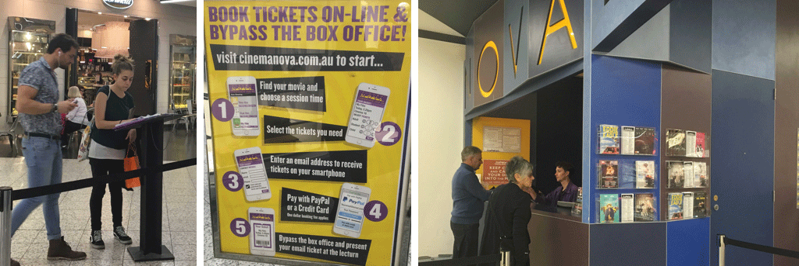
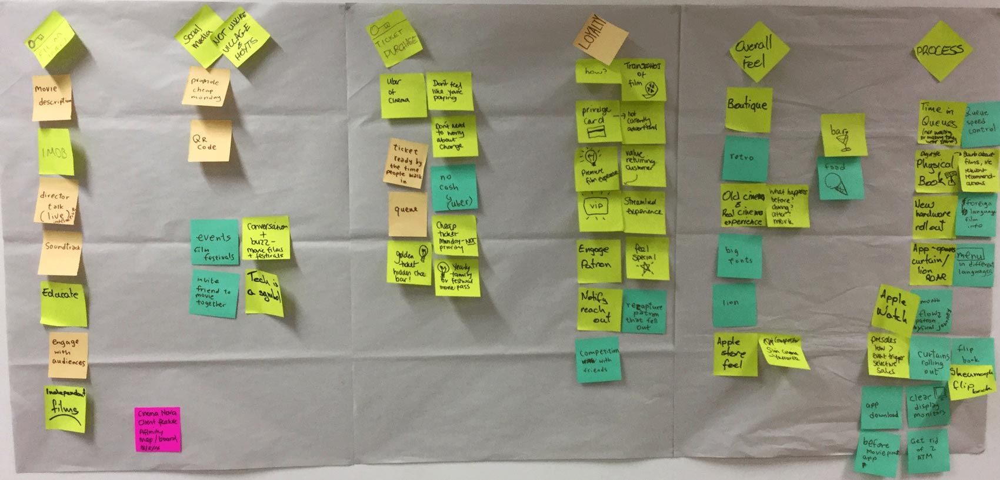
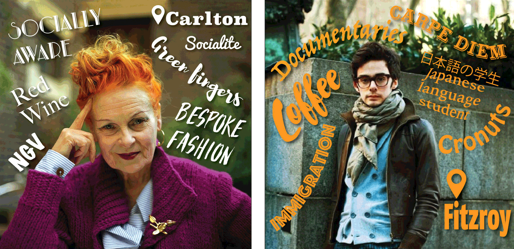
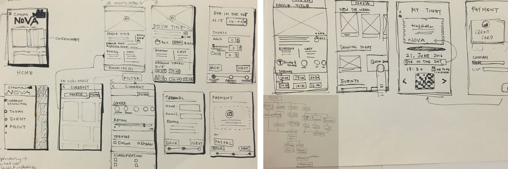
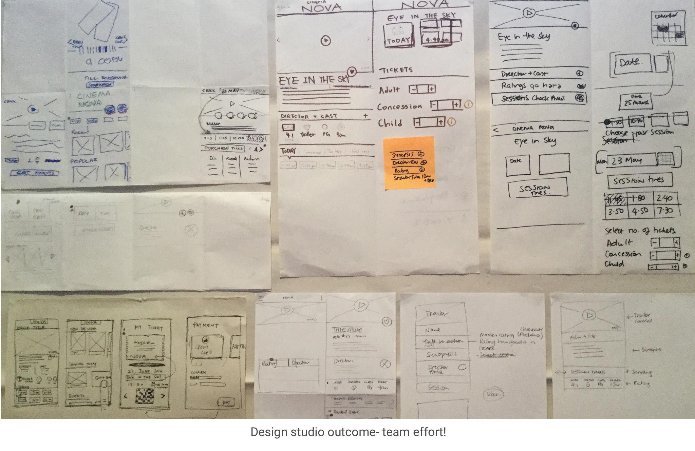
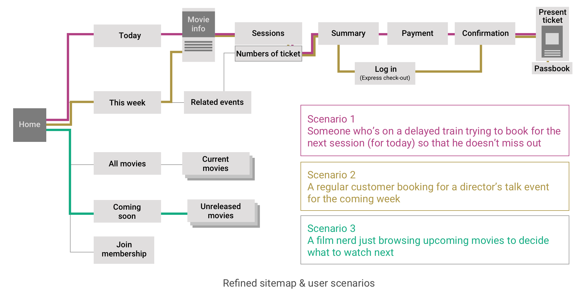
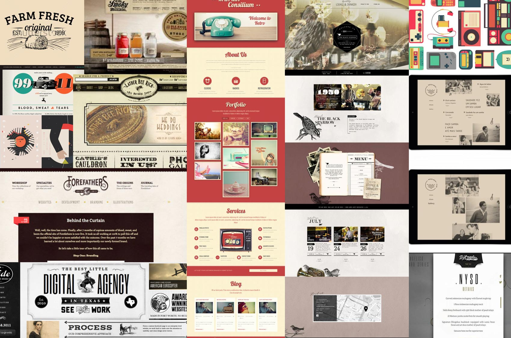

Team: 3 UX designers
My role: UI design, prototyping, user persona, user flow sketching, sitemap
Observation (Field trip)
We started the project by visiting Cinema Nova to conduct contextual inquiry. Through the observation and talking to the manager, we received some valuable insights and also identified some problems.
Key problems:
- People need to taken turns to read movie description through the big book
- Most people don’t book online (from the manger) only 20% use online booking
- More people book online only if it’s a popular movie (because it might be sold out)
- Currently there is an app on the app store, however, when you download it, it becomes an adaptive site on the mobile phone.
- Not many people would download the app; most people don’t know there’s an app
We also conducted an online survey validate our assumptions and user behaviour. Through the survey, we found out that most people only use the cinema booking system on the day or the day before. They may use the site to browse relevant events or movie description to plan ahead, but not necessary book ahead.
What Cinema Nova thought they needed (the brief)
After visiting the cinema and gaining some basic understandings of Cinema Nova, we were more prepared for our client meeting. We gathered the requirements from our initial meeting with the client, however, we constantly validating the requirements to make sure we are solving the right problems.
Here are the requirements from the initial client brief:
- Main deliverable- An app, to keep up with the technology
- Key features- browse movie, book tickets
- Special request- rolling curtain, old fashion flipping book page feature
What Cinema Nova actually needed
As a team, we sat down and had a discussion about the requirements from our client brief and our research findings. Affinity map was done as a group to determine the MVP (minimum viable product) for this project.
We concluded three main points that we would like to focus on based on our researh:
- Checking movie times for today
- Effortless online booking
- Browse movie description and relevant events
The big question came to us, why do they need an app?
A mobile site, not an app
Based on the survey we conducted with the user and the interview with our stakeholder, we found out that most people wouldn’t download an app for a cinema, unless they come to the cinema on a regular basis Not even to mention booking their tickets online, as there’s an extra charge for online booking. However, there are still people who choose to book online when the movie is popular, just in case the tickets run out when they arrive. For these reasons, having a responsive mobile site becomes a better alternative than having a native app.
WHO are the users?
1. Vivienne (worldly and wise) 2. Gabriel (cultural pioneer)
The bigger picture (Problem statement)
When looking for an authentic cinema experience, I want to have a quick and easy booking process, so I can avoid the hassle of long queues, and enjoy the ambience of my surroundings.
Sitemap & User flow
After nailing down the project focus as our group, I took the initiative to create a sitemap and drew up some user flow sketches as a starting point to translate our ideas into design concept. It helped the group to have a guide to start testing before iterating.
While drawing up the initial user flow, I kept in mind that there are different types of user behaviour and making sure that the landing page serves all 3 types of user behaviours, at the same time not overloading too much information in one page.
My sketches gave the group a great starting point to visualise our design solutions. As a group, we conducted a design studio to get more ideas rolling and come up with more creative interface options. The concepts were developed further and tested with modular paper prototype.
Based on the user persona that we translated from our research data, here are the main three scenario that the team has decided to focus on: 1. Last minute booking 2. Plan ahead 3. Just browsing
The special request
Remember that special request from initial client meeting about rolling curtain and old fashion flipping pages feature? That was a challenge for the team.
During the meeting, while the clients were describing how he liked the old-fashion rolling curtain effect, I caught the keywords in the conversation: retro, hipster, old-fashion, effect, travel back in time, real cinema experience.
After thinking through the terms, it appeared to me that those requests were their ways of describing the visual style they were after.
As the interface designer in the team, I put together a moodboard for the team as an inspiration. Then I implemented the style into our design to bring the Cinema Nova ticketing experience back in time.
The interface
(clickable prototype on the right)
Task:
- Booking for today
- eye in the sky
- select date
- one ticket
Feedback
The result showed that it was a succeed! The feedback from the clients mentioned that they were happy we didn’t take the initial special request “literally”, but we captured the heart and soul of cinema Nova across the whole mobile site through the interface style.
 Home
Home